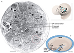
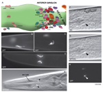
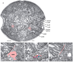
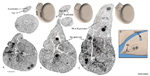

Handbook - Hermaphrodite
Epithelial System Atypical Cells see also Hypodermis Seam Cells Interfacial Cells
3 List of cells
4 References
Figures  AtypFIG 1 - Hypodermal origin of XXX in early embryo  AtypFIG 2 - XXX cells are found near the anterior bulb of the pharynx in the adult  AtypFIG 3 - Adult XXX cells  AtypFIG 4 - Tail spike cells in twofold embryo